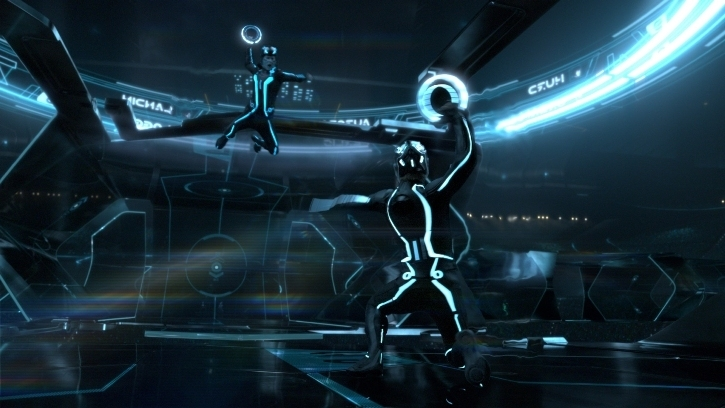

Potential advancements in VR technology.

VR still has a long way to go before it meets our expectations. Many of us have seen movies that have VR technology in them like Ready Player One and see that what we have right now is still a far cry from what we have have seen in media. In turth we should base our expectations for VR on other existing technology rather than fictional potrayals. As technology in general improves so will the technology used in VR and the fact remains that right now the technology currently simply doesn't have the capability to replice what we have seen on the big screen. . So, keeping our expectation realistic may allow us to enjoy what we have a lot more.
And while VR isn’t at that stage yet, it is on its way to getting there. We our currently seeing research being done into motion controllers to make them track any movement done by a player rather than a limited variety. This would mean you would be able to do just about anything with the controllers and it will keep track of the movement. This would certainly make the VR experience more immersive than it currently is. Advancements are also being done on eye tracking, which many argue is the future of VR as it is superior to head tracking. The reason for is because with eye tracking a lot less movement is required and is more accurate, it would also reduce the motion sickness that many feel with VR. On the other hand head tracking technology is cheaper to use since it utilizes mobile phones that we already have. The prices right now for stationary HMDs are still far too much for the average gamer, but research is being done to make sure it is more accessible in the future. And as technology improves all around, Vr will become cheaper and more widely used.
